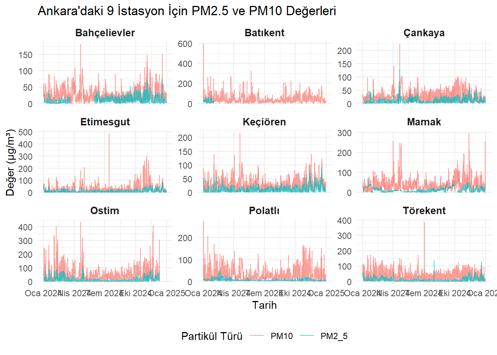

# install.packages("readr")
# install.packages("corrplot")
# install.packages("tidyr")
library(tidyverse)── Attaching core tidyverse packages ──────────────────────── tidyverse 2.0.0 ──
✔ dplyr 1.1.4 ✔ readr 2.1.5
✔ forcats 1.0.0 ✔ stringr 1.5.1
✔ ggplot2 3.5.1 ✔ tibble 3.2.1
✔ lubridate 1.9.4 ✔ tidyr 1.3.1
✔ purrr 1.0.4
── Conflicts ────────────────────────────────────────── tidyverse_conflicts() ──
✖ dplyr::filter() masks stats::filter()
✖ dplyr::lag() masks stats::lag()
ℹ Use the conflicted package (<http://conflicted.r-lib.org/>) to force all conflicts to become errorslibrary(lubridate)
library(ggplot2)
library(reshape2)
Attaching package: 'reshape2'
The following object is masked from 'package:tidyr':
smithslibrary(corrplot)corrplot 0.95 loadedlibrary(rpart)
library(rpart.plot)
library(shiny)
library(DT)
Attaching package: 'DT'
The following objects are masked from 'package:shiny':
dataTableOutput, renderDataTablelibrary(viridis)Zorunlu paket yükleniyor: viridisLitelibrary(readr)
library(stringr)
library(dplyr)
library(corrplot)
# CSV dosyasını yükleme
veri <- read.csv("ankara_hava_kalitesi.csv", header=TRUE)
# Son sütunun sayısını bulalım
son_sutun_indeksi <- ncol(veri)
# Son sütunu hariç tutarak yeni bir veri çerçevesi oluşturalım
veri <- veri[, -son_sutun_indeksi]
# Sütun adlarını temizle
colnames(veri) <- c("Istasyon", "Tarih", "PM10", "PM2_5", "SO2", "NO2", "NOX", "NO")
# Nokta yerine virgül kullanılmış, düzelt
numeric_cols <- c("PM10", "PM2_5", "SO2", "NO2", "NOX", "NO")
veri[numeric_cols] <- lapply(veri[numeric_cols], function(x) as.numeric(str_replace(x, ",", ".")))Warning in FUN(X[[i]], ...): Zorlamadan dolayı ortaya çıkan NAs
Warning in FUN(X[[i]], ...): Zorlamadan dolayı ortaya çıkan NAs
Warning in FUN(X[[i]], ...): Zorlamadan dolayı ortaya çıkan NAs
Warning in FUN(X[[i]], ...): Zorlamadan dolayı ortaya çıkan NAs
Warning in FUN(X[[i]], ...): Zorlamadan dolayı ortaya çıkan NAs
Warning in FUN(X[[i]], ...): Zorlamadan dolayı ortaya çıkan NAs# Tarih-saat formatını düzenle
veri$Tarih <- dmy_hms(veri$Tarih)
veri$Saat <- hour(veri$Tarih)
veri$Ay <- month(veri$Tarih, label = TRUE)
## Keşifsel Veri Analizi
## 1.Zaman Serisi Analizi
daily_avg <- veri %>%
mutate(Gun = as_date(Tarih)) %>%
group_by(Gun) %>%
summarise(across(all_of(numeric_cols), mean, na.rm = TRUE))Warning: There was 1 warning in `summarise()`.
ℹ In argument: `across(all_of(numeric_cols), mean, na.rm = TRUE)`.
ℹ In group 1: `Gun = 2024-01-01`.
Caused by warning:
! The `...` argument of `across()` is deprecated as of dplyr 1.1.0.
Supply arguments directly to `.fns` through an anonymous function instead.
# Previously
across(a:b, mean, na.rm = TRUE)
# Now
across(a:b, \(x) mean(x, na.rm = TRUE))ggplot(daily_avg, aes(x = Gun, y = PM10)) +
geom_line(color = "firebrick") +
labs(title = "Günlük Ortalama PM10 (2024)", x = "Tarih", y = "PM10 (µg/m³)")ggplot(daily_avg, aes(x = Gun, y = PM2_5)) +
geom_line(color = "firebrick") +
labs(title = "Günlük Ortalama PM2_5 (2024)", x = "Tarih", y = "PM2_5 (µg/m³)")## 2. Isı Haritası Analizi
heat_data <- veri %>%
group_by(Saat, Ay) %>%
summarise(PM2_5 = mean(PM2_5, na.rm = TRUE))`summarise()` has grouped output by 'Saat'. You can override using the
`.groups` argument.ggplot(heat_data, aes(x = Ay, y = Saat, fill = PM2_5)) +
geom_tile(color = "white") +
scale_fill_viridis(name = "PM2.5", option = "C") +
labs(title = "PM2.5 Isı Haritası (Saat x Ay)", x = "Ay", y = "Saat") +
theme_minimal()
heat_data <- veri %>%
group_by(Saat, Ay) %>%
summarise(PM10 = mean(PM10, na.rm = TRUE))`summarise()` has grouped output by 'Saat'. You can override using the
`.groups` argument.ggplot(heat_data, aes(x = Ay, y = Saat, fill = PM10)) +
geom_tile(color = "green") +
scale_fill_viridis(name = "PM10", option = "C") +
labs(title = "PM10 Isı Haritası (Saat x Ay)", x = "Ay", y = "Saat") +
theme_minimal()## Trend Analizi
## 1. Korelasyon Analizi
cor_data <- veri %>%
select(all_of(numeric_cols)) %>%
drop_na()
corr_matrix <- cor(cor_data)
corrplot(corr_matrix, method = "color", type = "lower", tl.col = "black"
)
## Model Uydurma
## 1. Sınıflandırma Modeli
# PM10'u sınıflara ayıralım (örnek: temiz - kirli)
veri$class <- ifelse(veri$PM10 > 50, "Kirli", "Temiz")
data_model <- veri %>%
select(PM10, PM2_5, SO2, NO2, NOX, NO, class) %>%
drop_na()
# Eğitim-test bölmesi
set.seed(123)
sample_idx <- sample(1:nrow(data_model), 0.7 * nrow(data_model))
train <- data_model[sample_idx, ]
test <- data_model[-sample_idx, ]
# Model: Karar ağacı (rpart)
model <- rpart(class ~ ., data = train, method = "class")
rpart.plot(model)# Doğruluk oranı
pred <- predict(model, test, type = "class")
accuracy <- mean(pred == test$class)
print(paste("Doğruluk: ", round(accuracy * 100, 2), "%"))[1] "Doğruluk: 99.99 %"# PM2_5'u sınıflara ayıralım (örnek: temiz - kirli)
veri$class <- ifelse(veri$PM2_5 > 15, "Kirli", "Temiz")
data_model <- veri %>%
select(PM10, PM2_5, SO2, NO2, NOX, NO, class) %>%
drop_na()
# Eğitim-test bölmesi
set.seed(123)
sample_idx <- sample(1:nrow(data_model), 0.7 * nrow(data_model))
train <- data_model[sample_idx, ]
test <- data_model[-sample_idx, ]
# Model: Karar ağacı (rpart)
model <- rpart(class ~ ., data = train, method = "class")
rpart.plot(model)# Doğruluk oranı
pred <- predict(model, test, type = "class")
accuracy <- mean(pred == test$class)
print(paste("Doğruluk: ", round(accuracy * 100, 2), "%"))[1] "Doğruluk: 100 %"## Görselleştirme